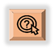

UNIT 4 - Digital Epidemiology Tool: MICROREACT
OUTLOOK
At the end of this unit, the participants shall be able to:
recognize the key features and uses of Microreact
manipulate the data visualization tool; and
analyze the inputs in the Microreact project
LESSON PROPER
Microreact is software developed by CGPS that allows you to upload, visualise and explore any combination of clustering (trees), geographic (map) and temporal (timeline) data. Other metadata variables are displayed in a table. You can specify colours and/or shapes to display on the map, tree and/or timeline. A permanent URL is produced for you to share your Microreact, or a .microreact file can be downloaded for sharing with collaborators.
Microreact is a web-based application for the provision of interactive data visualisations. It enables the rapid generation and linkage of trees, maps, networks, charts and timelines, enabling epidemiologists and key decision makers to react faster and with greater accuracy.
Microreact can be deployed securely on a local server, behind firewalls and adhering to local data governance. Users can make their Microreact projects findable on the network, or share them privately with another user by sharing a downloaded project or using secret links. Microreact projects for public consumption can be shared on the public Microreact site.
| Navigating the site |
|---|
Click the menu icon The menu bar can be accessed by clicking on the icon on the upper left corner of the page. Clicking the icon brings up the main menu. |
View the four main pages This menu allows you to navigate the site. The site has four main pages:
You may also use this menu to sign out of your account by clicking “Sign Out”. You may also submit feedback to the developers about Microreact by selecting “Send Feedback”. |
| Microreact Icon Summary | |
|---|---|
| Icon | Description |
| Display additional menu options. It can be found either within individual panels, or at the top left of your microreact account. | |
| Opens a menu to let you edit or delete existing panels, as well as add a new panel. | |
| In this menu you can control selections for labels, colours, and shapes. | |
| Download individual project files, such as the metadata file, .newick files, etc. | |
| Update who has access to the project as well as find sharing links and create an easier alias link. | |
| Allows you to save a new project, update a current project, or download a file containing the complete project. | |
| This is the configure icon. It expands or collapses additional buttons or menus. | |
| Maximise expands one panel to cover the whole dashboard, minimise returns the panel to standard size. | |
| This is the lasso tool (or polygon lasso). It allows you to draw a filter around points of interest on a network or tree to create a custom filter. | |
| Shuffles the nodes in a network. | |
| Automatically adjust the tree or network size to the current panel size | |
| Controls whether the tree is stretched/compressed in all four directions, only horizontally, or only vertically. Click the icon to toggle through the three modes. | |
| This appears in the data table headers and allows you to filter by values or build filter conditions in any of the columns | |
| In the map panel this viewport button filters the dashboard to only things currently visible in the map panel. |